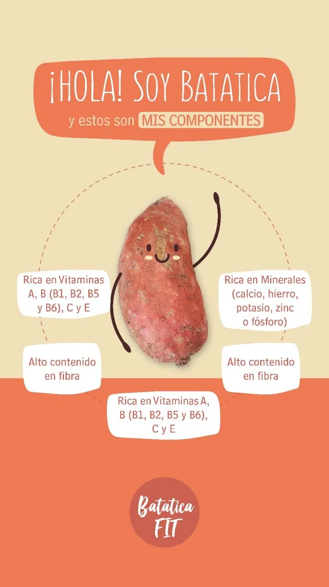
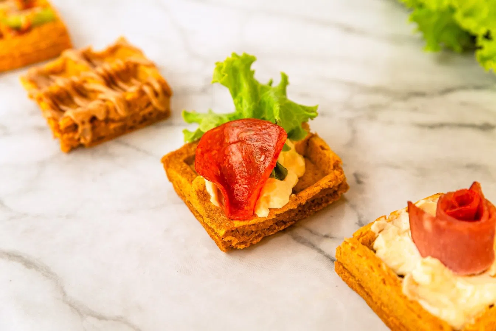

Descubre por qué nuestros waffles son la opción perfecta para tu salud y bienestar
Nuestros productos nacen en el corazón del campo colombiano, cultivados con sabiduría ancestral por la comunidad indígena Zenú. Cada bocado apoya el comercio justo, la sostenibilidad ambiental y la preservación de nuestras tradiciones.
Perfectos para celíacos. No contienen gluten ni trazas de esta proteína que causa problemas digestivos.
Aptos para veganos y vegetarianos. No contienen ingredientes de origen animal ni sus derivados.
Fuente importante de fibra dietética que mejora la digestión y favorece tu salud intestinal.
Endulzado naturalmente. Sin azúcares refinados ni edulcorantes artificiales peligrosos.
Por porción (100g de producto)
| Nutriente | Cantidad | % VD* |
|---|---|---|
| Energía | 180 kcal | 9% |
| Proteína | 4.5g | 9% |
| Grasas Totales | 2.1g | 3% |
| Carbohidratos | 35g | 12% |
| Fibra Dietética | 6.2g | 25% |
| Sodio | 120mg | 5% |
| Potasio | 350mg | 10% |
| Hierro | 2.5mg | 14% |
*Valores Diarios basados en una dieta de 2000 calorías. Los valores pueden variar según el lote.
Bajo en grasas saturadas y rico en fibra. Ayuda a mantener niveles saludables de colesterol.
Alto contenido de fibra aumenta la saciedad. Perfecto para dietas controladas en calorías.
Estimula el tránsito intestinal. Previene problemas digestivos y constipación frecuente.
Carbohidratos complejos proporcionan energía prolongada sin picos de glucosa.
Contiene compuestos naturales que protegen tus células del estrés oxidativo.
Nutrientes que mejoran tu salud general y calidad de vida día a día.

Rica en antioxidantes y flavonoides
Disminuye el riesgo de enfermedades crónicas
Alto contenido en potasio — normaliza la hipertensión
Fácil digestión y renueva la flora intestinal
Contribuye a la creación de masa muscular
Fuente de vitamina A segura para el sistema inmunitario
Índice glucémico bajo — antidiabético, regula la insulina

"Excelentes waffles. Mi familia con problemas de gluten finalmente puede disfrutar desayunos saludables juntos."
"Deliciosos y saludables. He bajado peso comiendo estos waffles regularmente. Recomendadísimo!"
"Como vegana, es difícil encontrar opciones sabrosas. Estos waffles son increíbles. Apoyo a productores locales."
Únete a miles de colombianos que han transformado su alimentación
Ver Productos